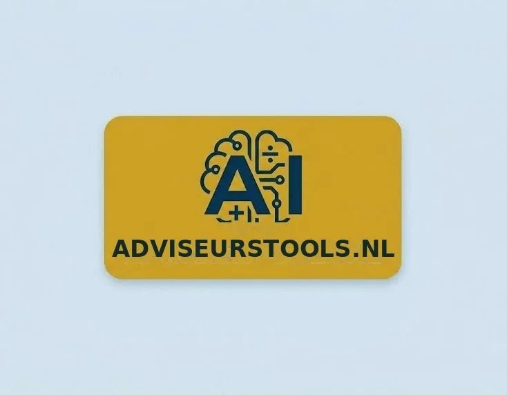

Welkom in het tool-lab: Bouw mee aan de toekomst.
Ontdek de nieuwste generatie rekentools. In deze experimentele omgeving testen we de kracht van tools om financieel advies sneller en scherper te maken. Deze website is bedoeld als inspiratie, bekijk de mogelijkheden.
Let op: Gebruik voor je eigen veiligheid uitsluitend fictieve testgegevens. De tools zijn volop in ontwikkeling en de resultaten zijn indicatief. Slimme techniek, maar reken het altijd zelf even na! We geven op deze demo tools geen garanties.
Meertalig
De meeste tools kunnen in elke taal geleverd worden, dien gerust een verzoek in.
Heb je een specifiek idee? Bouw met ons mee!
Onze (AI)tools op deze pagina zijn nog maar het begin. We zijn volop in beweging en ontwikkelen continu nieuwe slimme oplossingen voor de verzekerings- en hypotheekmarkt.
Mis je een specifieke tool of wil je een gepersonaliseerd voorbeeld ontvangen?
Wij horen graag waar jij in je dagelijkse werk tegenaan loopt. Of het nu gaat om een complexe berekening, een slimme vergelijker of een datatool: ons LAB staat voor je open.
Een werkend prototype voor jou. Een nieuwe boom voor het Hypotheekbos. 🌳🌳🌳
Stuur een verzoek naar onze innovatie-experts en ontdek wat AI voor jouw kantoor kan betekenen. Heb je een idee voor een slimme rekentool, calculator of AI-toepassing? Wij bouwen er kosteloos een werkend prototype van. Wat we vragen: een vrijwillige donatie aan Hypotheekbos.nl — zodat er ergens in Nederland een boom 🌳 de grond in gaat. De donatie is vrijwillig, gaat rechtstreeks naar Hypotheekbos.nl en staat los van (financieel) advies of andere dienstverlening.
Tool op eigen website
Wil je een demo tool / applicatie inzetten op je website of database dan leveren we een werkende tool op, ontwikkeld met aandacht voor veiligheid en privacy en afgestemd op jouw eisen.
👉 Mail naar: jeroen@oversteegen.nl, bel 06-21247257 of nog sneller: app mij direct.